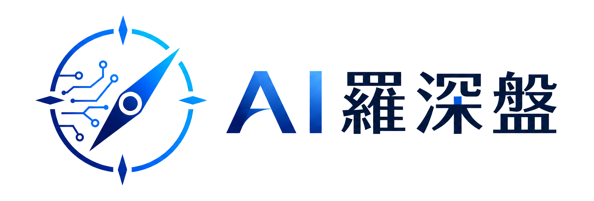
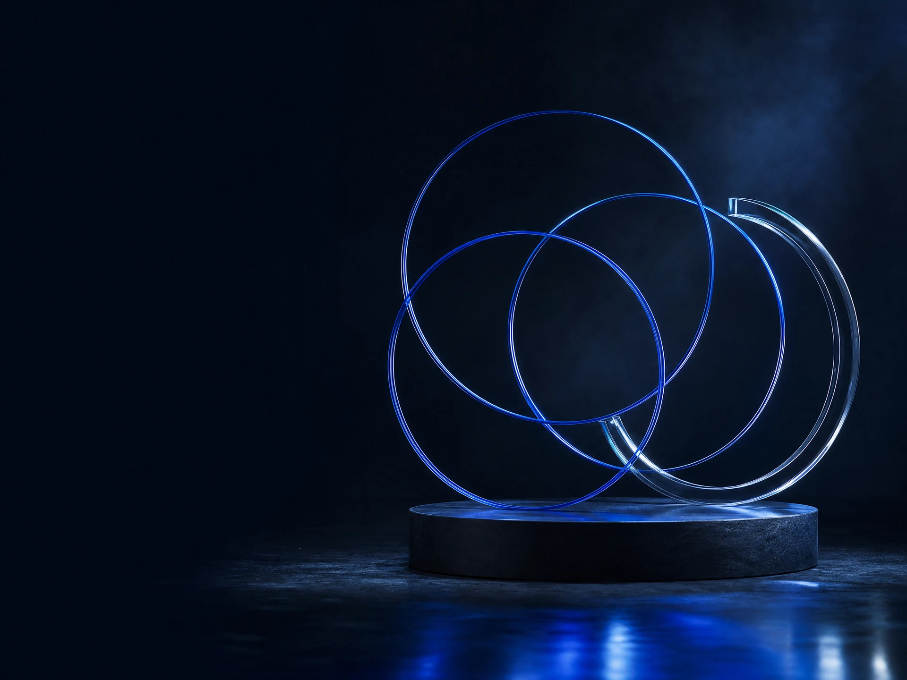

うまくいかなかったことを、先に話せる。
導入の失敗、社内の戸惑い、判断を保留している理由。整えきれていない実験記録こそ、次の意思決定を豊かにします。

料金・プランWHY WE GATHER
けれど経営の現場には、まだ答えのない問いが残ります。投資対効果は見えるのか。現場はついてこられるのか。そもそも、何から試せばいいのか。
共同体は、その迷いを役職の外で持ち寄るための、少人数・対話型のクローズドな場です。
OUR AGREEMENT
導入の失敗、社内の戸惑い、判断を保留している理由。整えきれていない実験記録こそ、次の意思決定を豊かにします。
誰かの成功パターンをなぞるのではなく、自社にとって何を試し、どこで止まるべきかを、複数の視点で見直します。
議論を正解探しにしない。今日の対話から、自分の組織で確かめる小さな実験を一つ選びます。
A ROOM FOR THE REAL
完成した成功談だけでは、経営の判断は進みません。見栄えのしない途中経過、社内にまだ言語化できていない違和感、ひとつ前の失敗。ここでは、そうした「現在地」を置いていきます。
迷いを持ち寄れる場所から、
次の一手は見えてくる。
THE RHYTHM
情報を集めるための会ではありません。自社の文脈に引き寄せて、曖昧な問いを実行可能な仮説へと編み直す時間です。
いま、決めきれずにいること。
他社の試行錯誤に、耳を澄ます。
自社に戻って確かめることを定める。

— A SMALL CIRCLE, WIDE HORIZON
FOR THOSE WHO LEAD
AI活用を「導入の話」で終わらせず、経営の問いとして扱いたい方へ。共同体は、率直な対話を大切にできる経営者のための場です。